Tracked Vehicle
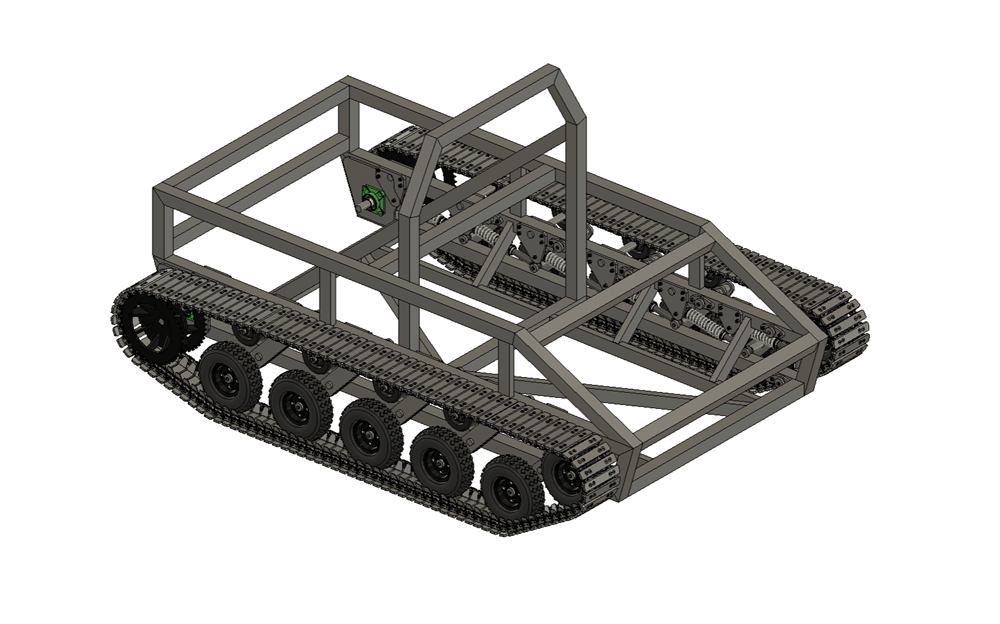
Designed a compact gasoline-powered tracked vehicle and completed a major fabrication push over winter break 2025-2026. The chassis remains in progress.
Design and Drivetrain
- Planned size and output are approximately 0.7 tons, eight feet long, and 50 horsepower.
- A vertical-shaft gasoline engine will drive Hydro-Gear ZT-5400 units for both sides.
- The frame uses welded steel tubing with plasma-cut suspension, axle, and drivetrain mounting plates.
Winter-Break Fabrication
Before cutting the vehicle parts, the plasma cutter's control cabinet had to be rebuilt and the machine had to be recommissioned. Chassis and track-frame fabrication then continued through winter break. A delayed hole-saw shipment prevented finishing every planned operation before the break ended, so the remaining fabrication will be completed in a later work session.
Gallery
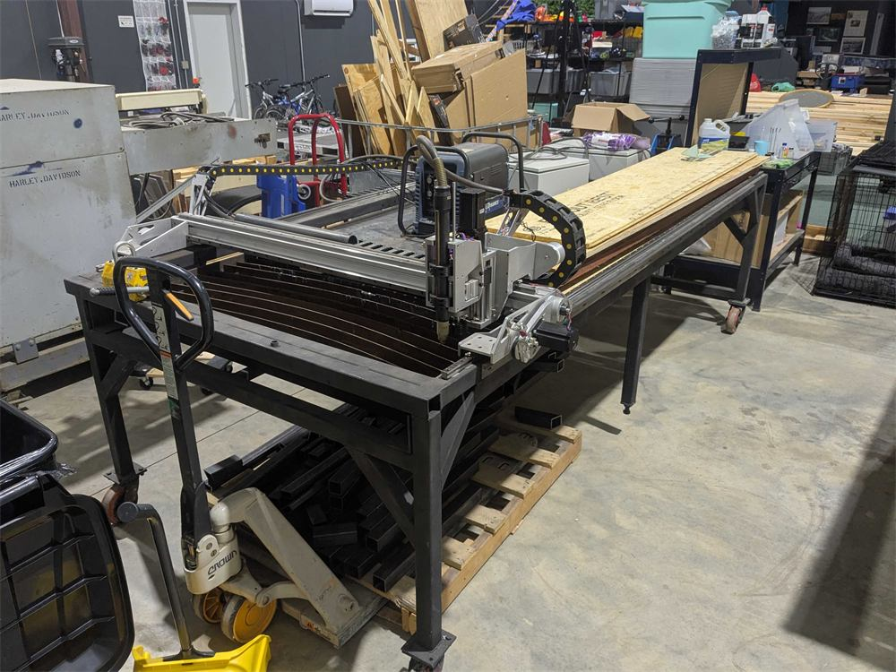
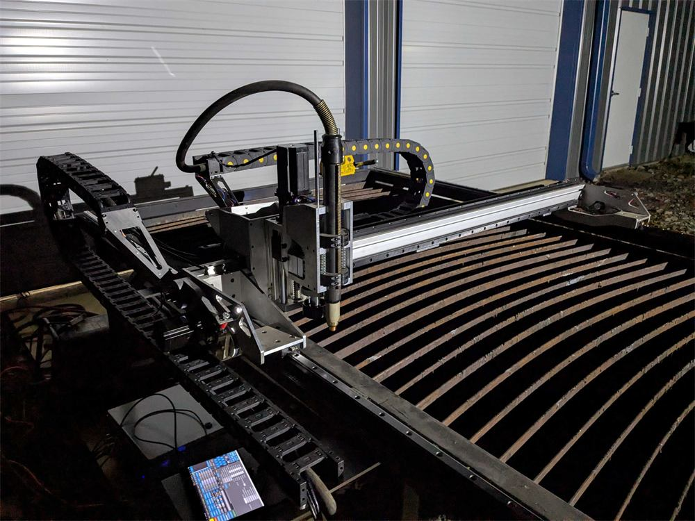
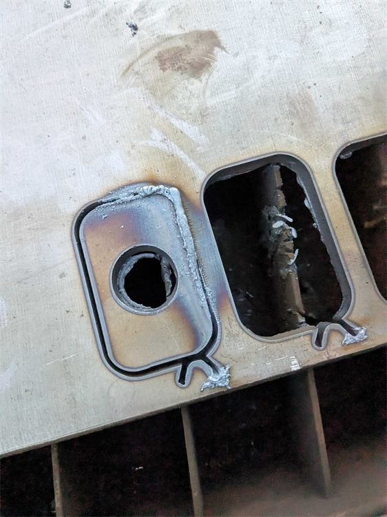
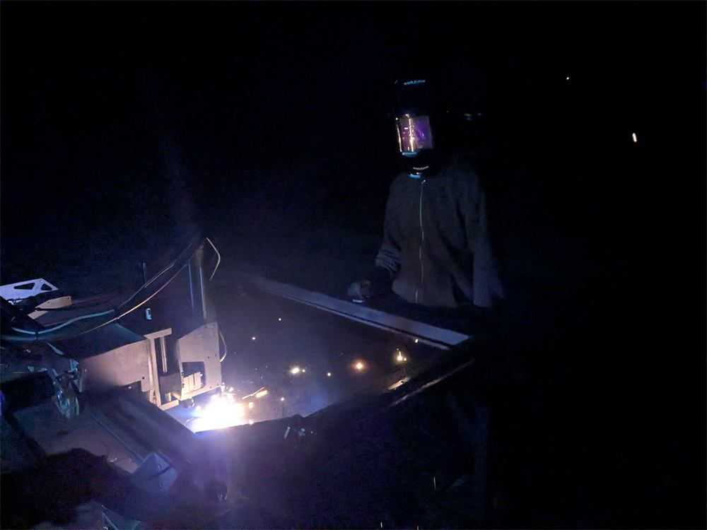
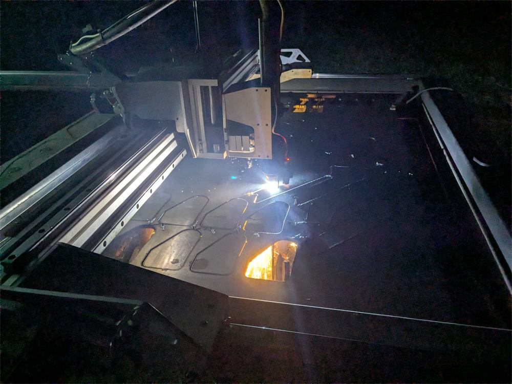
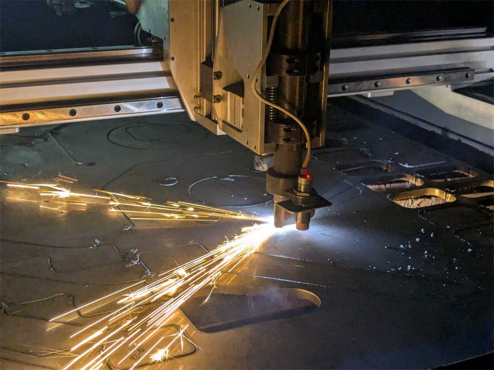
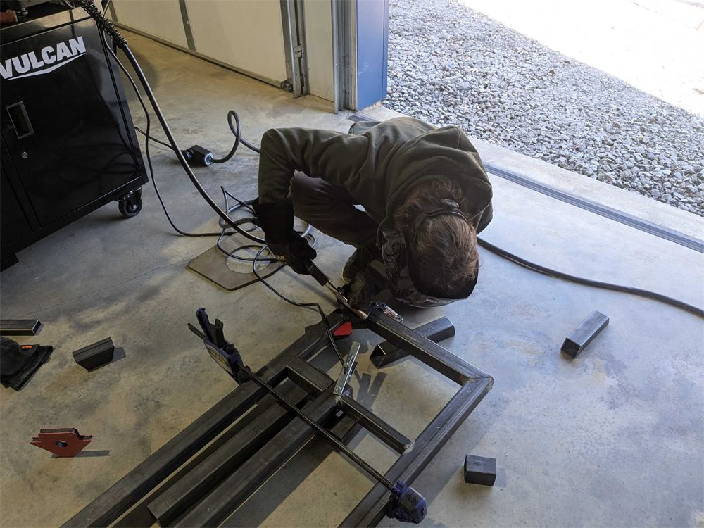
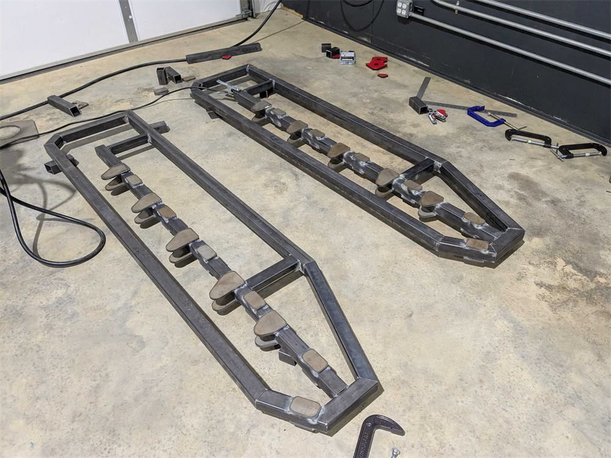
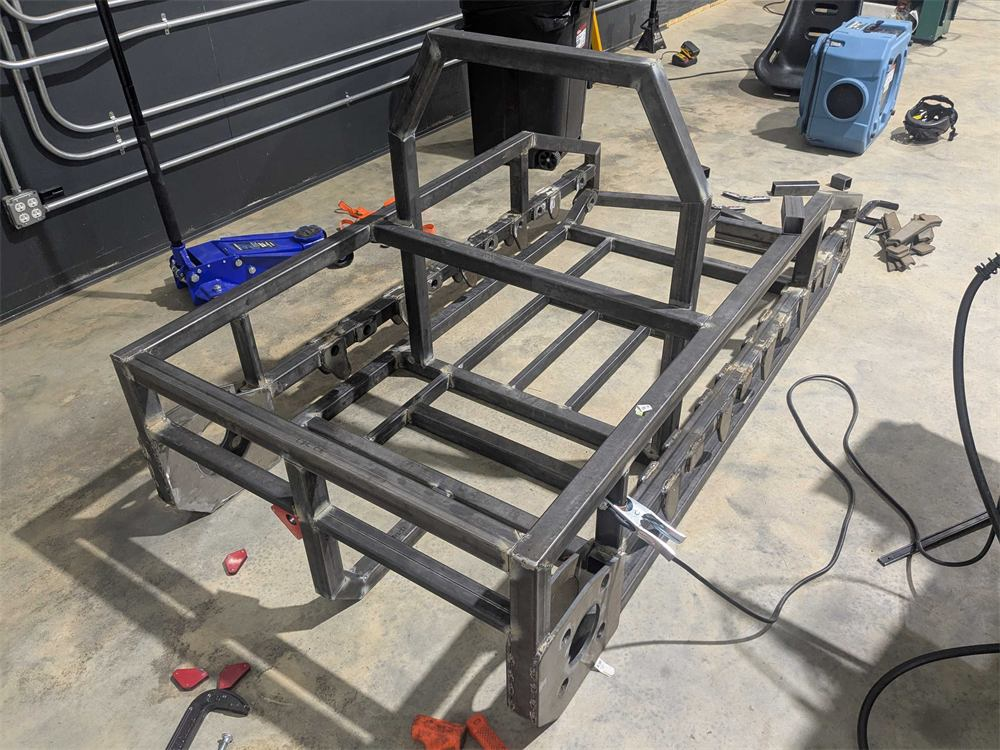
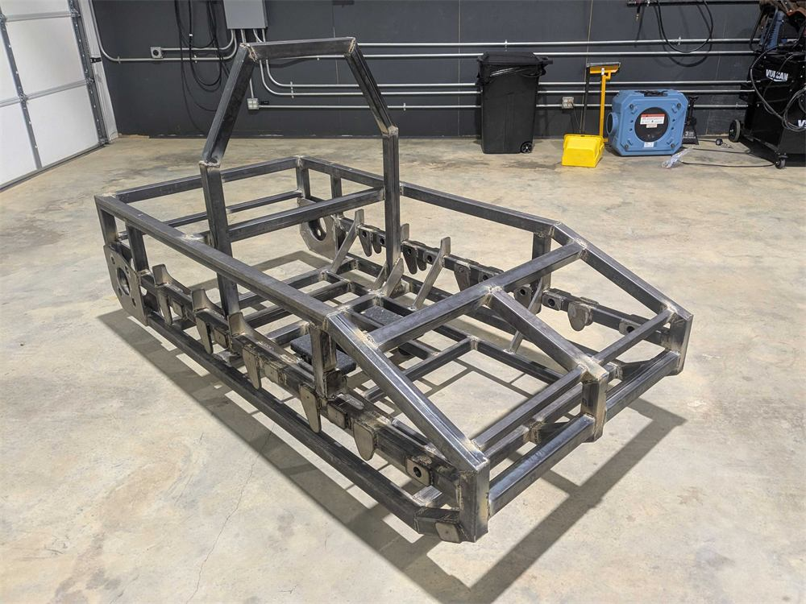